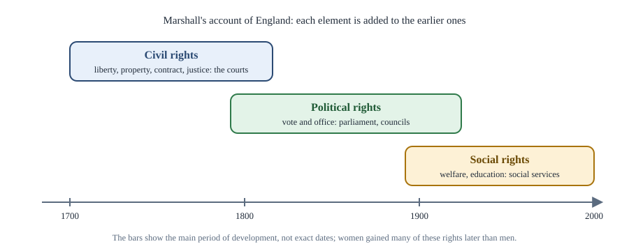

Chapter 9: Citizenship and Nationalism¶
Who belongs, on what terms, and the idea of the nation
Learning outcomes
When you have finished this chapter you should be able to:
- define citizenship and explain its three dimensions: status, rights and participation;
- describe Marshall's account of civil, political and social citizenship and its criticisms;
- compare liberal, republican, communitarian and differentiated conceptions of citizenship;
- explain how citizenship is acquired (jus soli, jus sanguinis, naturalisation) and the problems of statelessness and refugees;
- define nation and nationalism and compare civic and ethnic nationalism;
- compare primordialist, modernist and ethno-symbolist theories of the nation, and assess the arguments for and against nationalism, including Tagore's critique.
9.1 What is citizenship?¶
Citizenship is full membership of a political community. To be a citizen is to belong, as an equal, to a state, with the rights and duties that membership brings. The idea has three dimensions.
- Legal status. Citizenship is a legal relationship between a person and a state: a citizen has a passport, can enter and live in the country, cannot normally be deported, and is entitled to the state's diplomatic protection abroad.
- Rights. Citizens enjoy civil, political and social rights, some of which (such as voting in national elections or holding certain offices) are often reserved to them.
- Participation and identity. Citizenship also involves taking part in public life and a sense of belonging to a shared community.
The idea is ancient. Aristotle defined a citizen as one who shares in ruling and being ruled in turn, taking part in deliberation and judgement. Athenian citizenship was highly exclusive: women, slaves and resident foreigners were not citizens. The Roman Republic and Empire developed citizenship as a legal status that could be extended to conquered peoples; in 212 CE the emperor Caracalla extended it to almost all free inhabitants of the empire. Modern citizenship emerged with the nation-state and the democratic revolutions, which turned subjects of a king into citizens of a republic.
Citizenship and nationality¶
In everyday speech "citizenship" and "nationality" are often used interchangeably to mean legal membership of a state. In political theory "nationality" can also mean belonging to a nation in the cultural sense discussed in section 9.5. The two do not always coincide: a state may contain citizens of several national groups, and members of one national group may be citizens of several states.
9.2 Marshall: civil, political and social citizenship¶
The British sociologist T. H. Marshall, in the essay Citizenship and Social Class (1950), gave the most influential modern account of citizenship. He defined citizenship as a status bestowed on those who are full members of a community, all of whom are equal with respect to the rights and duties with which the status is endowed. Studying England, he argued that citizenship developed in three stages, each adding a new element.
- Civil rights (mainly the eighteenth century): the rights necessary for individual freedom: liberty of the person, freedom of speech, thought and faith, the right to own property and make contracts, and the right to justice. Their institution is the courts.
- Political rights (mainly the nineteenth and early twentieth centuries): the right to take part in the exercise of political power, as a voter or a member of a governing body. Their institutions are parliament and local councils.
- Social rights (mainly the twentieth century): the right to a modicum of economic welfare and security, and to share in the social heritage and live the life of a civilised being according to the standards prevailing in the society. Their institutions are the education system and the social services.

Marshall's central argument concerned the relation between citizenship and class. Capitalism produces inequality of class; citizenship is a principle of equality of status. Social rights, he argued, modify the inequalities of the market by guaranteeing all citizens a basic standard of life, so that equal citizenship can coexist with, and soften, class inequality.
Criticisms¶
- Ethnocentric. The sequence describes England, not a universal law. In many countries political rights came before secure civil rights, or social rights were introduced by authoritarian rulers (Bismarck's Germany introduced social insurance in the 1880s before full democracy).
- Gender. The sequence describes the experience of men. Women in England gained many civil rights (such as married women's property rights) and political rights after men, and social rights were often designed around a male breadwinner. Feminists such as Ruth Lister and Carole Pateman criticised the neglect of the private sphere.
- Too optimistic. Marshall seemed to assume steady progress; the retreat of welfare provision in some countries from the 1980s showed that social rights can be reduced.
- Neglect of duties and participation. Critics on the right (and republicans) argued that Marshall's account is all rights and no responsibilities, encouraging passive citizenship.
9.3 Conceptions of citizenship¶
Liberal citizenship¶
For liberals, citizenship is above all a status carrying rights. Citizens are free and equal individuals, protected by the state in pursuing their own ideas of the good life. Participation in politics is a right, not a duty; a citizen who prefers private life is not failing in any civic obligation. Critics say this produces a thin, passive citizenship of consumers rather than participants.
Republican citizenship¶
The civic republican tradition, from Aristotle and the Roman republic through Machiavelli and Rousseau, sees citizenship as active participation in self-government. Citizens should have civic virtue: concern for the common good, willingness to serve and to take part in public deliberation. Liberty depends on citizens being vigilant against corruption and domination (Chapter 4). Critics worry that demanding civic virtue may be oppressive, that it assumes a homogeneous community, and that most people in large modern societies cannot or do not wish to be active citizens all the time.
Communitarian citizenship¶
Communitarians emphasise the community's shared values and traditions, the duties citizens owe to one another and the importance of belonging. They criticise a rights-centred individualism that, they argue, weakens social bonds.
Differentiated and multicultural citizenship¶
Iris Marion Young (1989) argued that the ideal of a universal citizenship, in which all citizens are treated identically and set aside their particular identities, in practice favours dominant groups, whose perspective is presented as neutral. She proposed differentiated citizenship, with special representation for oppressed groups. Will Kymlicka (Multicultural Citizenship, 1995) distinguished national minorities (groups such as indigenous peoples that were incorporated into a larger state and have a claim to self-government) from immigrant groups (which generally seek integration with accommodation of their cultural practices), and argued that liberal principles support group-differentiated rights for both. Critics, such as Brian Barry in Culture and Equality (2001), replied that equal treatment under common laws is fairer and that group rights can entrench divisions.
| Conception | Core idea of citizenship | Emphasis | Main criticism |
|---|---|---|---|
| Liberal | Status bearing equal rights | Individual freedom | Passive, thin |
| Republican | Active participation in self-government | Civic virtue, common good | Too demanding; assumes homogeneity |
| Communitarian | Membership of a community of shared values | Belonging, duties | May suppress diversity and dissent |
| Differentiated | Equal membership that recognises group differences | Inclusion of marginalised groups | May entrench group divisions |
Table 9.1. Four conceptions of citizenship.
Key idea
Citizenship combines legal status, rights and participation. Liberals stress rights, republicans participation and virtue, communitarians belonging, and theorists of differentiated citizenship the inclusion of groups whom universal citizenship has marginalised.
9.4 Acquiring and losing citizenship¶
Rules of acquisition¶
States use two basic principles, usually combined.
- Jus soli (right of the soil): citizenship by birth on the territory. The United States and many countries of the Americas grant citizenship to almost anyone born on their soil.
- Jus sanguinis (right of blood): citizenship by descent from a citizen parent, wherever one is born. Many European and Asian countries rely mainly on this principle.
- Naturalisation: acquisition by a foreigner after a period of residence and other conditions (language, knowledge of the country, good character, an oath of allegiance).
In India citizenship at the commencement of the Constitution was dealt with in Part II, and acquisition and loss since then are governed by the Citizenship Act, 1955, as amended. Indian law began close to jus soli and, through amendments, moved towards requiring that a parent also be a citizen (with further conditions), a combination of soil and descent.
Dual citizenship¶
Some states permit citizens to hold another citizenship; others require them to give up any other. India does not permit dual citizenship, but offers the status of Overseas Citizen of India to many persons of Indian origin who are citizens of other countries, giving them rights such as visa-free travel and residence, but not political rights.
Statelessness and refugees¶
A stateless person is someone not considered a national by any state. Statelessness can result from the break-up of states, discriminatory laws, gaps between nationality laws, or lack of birth registration. Stateless people may be unable to work legally, go to school, travel or receive health care.
A refugee, under the Refugee Convention of 1951 (as extended by its Protocol of 1967), is a person who is outside his or her country and unable or unwilling to return owing to a well-founded fear of persecution for reasons of race, religion, nationality, membership of a particular social group or political opinion. The core principle of refugee law is non-refoulement: a refugee must not be returned to a country where he or she faces persecution. India is not a party to the 1951 Convention, though it has hosted large numbers of refugees.
Reflecting on the stateless people of interwar Europe in The Origins of Totalitarianism (1951), Hannah Arendt argued that the supposedly universal rights of man had turned out to be unenforceable for those who belonged to no political community. The most fundamental right, she wrote, is the right to have rights: the right to belong to a community that will protect one's other rights.
Worked example 9.1: Applying the rules of citizenship
Situation. A child is born in Country P to parents who are both citizens of Country Q. Country P grants citizenship only by descent; Country Q grants citizenship only to children born on its territory.
Analysis. Country P applies jus sanguinis: the child's parents are not P citizens, so the child does not acquire P citizenship. Country Q applies jus soli: the child was not born in Q, so the child does not acquire Q citizenship either. The child is stateless at birth, an example of how gaps between nationality laws produce statelessness. The 1961 Convention on the Reduction of Statelessness asks states to grant nationality to children born on their territory who would otherwise be stateless, precisely to close such gaps.
9.5 Nations and nationalism¶
What is a nation?¶
A nation is a large group of people who see themselves as a community sharing a common identity, often based on some combination of language, history, culture, religion, territory and political aspirations, and who usually seek some form of self-government. A nation-state is a state whose population is (or is held to be) a single nation.
No single objective feature defines a nation. Switzerland is a nation with four official languages; Arabic speakers form many states; India is home to many languages and religions. The French historian Ernest Renan, in a lecture of 1882, "What Is a Nation?", argued that a nation is a soul, a spiritual principle, made of shared memories of the past (including the forgetting of past violence) and a present will to live together. The existence of a nation, he said, is "a daily plebiscite".
Nationalism has two meanings: (1) a sentiment of attachment to one's nation, and (2) a doctrine or political movement holding that the nation is the primary unit of political loyalty and that each nation should have its own state or self-government. In the classic formulation of Ernest Gellner, nationalism is primarily a political principle that holds that the political and the national unit should be congruent.
Civic and ethnic nationalism¶
| Civic nationalism | Ethnic nationalism | |
|---|---|---|
| Basis of the nation | Shared citizenship, political values and institutions | Shared descent, ethnicity, language or religion |
| Membership | Open, by adopting the political values and becoming a citizen | Closed or difficult, by birth |
| Typical examples given | The French revolutionary idea of the nation; the United States | Nineteenth-century German romantic nationalism |
| Main strength | Inclusive of diversity | Strong sense of identity and solidarity |
| Main criticism | May be thin; "civic" nations often have an ethnic core | Can exclude and persecute minorities |
Table 9.2. Civic and ethnic nationalism.
The distinction is useful but too neat. Civic nations have usually been built around a dominant language and culture, and ethnic nations can become more inclusive. Many scholars prefer to see civic and ethnic elements as present in different proportions in all nationalisms.
Theories of the nation¶
Where do nations come from?
- Primordialism. Nations are ancient and natural, rooted in kinship, language and culture going back far into history. This is how many nationalists see their own nations. Critics point out that many supposedly ancient nations are recent creations.
- Modernism. Nations are products of modernity. Ernest Gellner (Nations and Nationalism, 1983) argued that industrial society needs a mobile, literate workforce sharing a standardised high culture, spread by mass education; nationalism provides it. Benedict Anderson (Imagined Communities, 1983) called the nation an imagined community: imagined because members will never meet most of their fellow members, yet each holds an image of their communion. He linked its rise to print capitalism: newspapers and novels in vernacular languages created a reading public that imagined itself as one community. Eric Hobsbawm and Terence Ranger (The Invention of Tradition, 1983) showed how many "ancient" national traditions were invented in the nineteenth century.
- Ethno-symbolism. Anthony D. Smith argued that modernists go too far: modern nations are built on pre-existing ethnic communities (ethnies) with their own myths, memories, symbols and attachment to a homeland. Nations are modern, but not created from nothing.
'Imagined' does not mean 'false'
Anderson did not claim that nations are fake. "Imagined" means that a nation exists in the shared understanding of its members, as all large communities do, since no one can know personally the millions of fellow members. Imagined communities can be extremely real in their effects: people work, vote, sacrifice and die for them.
9.6 Self-determination¶
The principle of national self-determination holds that a nation has the right to decide its own political status, including independence. It was championed after the First World War by the American president Woodrow Wilson, and appears in the United Nations Charter (1945), which names respect for the principle of equal rights and self-determination of peoples among the purposes of the United Nations. In the period of decolonisation it became the basis of the claims of colonised peoples to independence.
The principle raises hard questions.
- Who is the "self"? Most states contain more than one group that could claim to be a nation. If every group could secede, states would fragment endlessly.
- Secession. International law generally recognises a right to independence for colonised peoples, but is very reluctant to recognise a right of secession from existing states, emphasising their territorial integrity. Some theorists defend a remedial right to secede only for groups suffering grave injustice; others defend a broader right for any group that democratically chooses independence.
- Internal self-determination. Many claims can be met by autonomy, federalism or minority rights within an existing state, rather than independence.
9.7 Assessing nationalism¶
Arguments for¶
- Belonging and identity. National membership gives people a sense of belonging, a shared history and a cultural context in which their choices make sense. Liberal nationalists such as Yael Tamir and David Miller argue that national identity is compatible with liberal values and supports them.
- Solidarity. A shared national identity may motivate the trust and solidarity needed for democracy and for redistribution: people are more willing to pay taxes for the welfare of those they see as fellow members.
- Freedom from foreign rule. Nationalism was the driving force of the movements that ended colonial rule in Asia and Africa. The Indian national movement combined demands for self-rule with ideas of democracy, rights and social reform.
Arguments against¶
- Exclusion and conflict. Nationalism defines insiders and outsiders, and has fuelled discrimination against minorities, wars of expansion and ethnic cleansing. The extreme ultranationalism of fascism and Nazism led to aggression and genocide (Chapter 12).
- Arbitrariness. Why should the accident of birth into a nation determine one's moral obligations? Cosmopolitans argue that our fundamental moral concern should extend to all human beings equally (Chapter 14).
- Suppression of internal diversity. Building a nation-state has often meant imposing one language and culture on all.
Tagore's critique¶
The poet Rabindranath Tagore (1861–1941), who received the Nobel Prize in Literature in 1913, delivered a series of lectures in Japan and the United States in 1916–17, published as Nationalism (1917). Tagore was deeply committed to India's freedom and to the dignity of its people, but he distinguished between a people's genuine self-respect and what he called the Nation: the political and commercial organisation of a people for power and profit, a machine that subordinates human beings to its purposes. He saw the aggressive nationalism of the Western powers as the source of imperialism and of the First World War, and he warned Indians and Japanese against imitating it. India's problem, in his view, was social rather than merely political, and its contribution to the world should be a spirit of unity in diversity and openness to all humanity. Critics accused Tagore of idealism and of underestimating the need for political struggle against colonial rule; admirers see his warnings about aggressive nationalism as prophetic. Gandhi, for his part, described his own patriotism as compatible with love of humanity and the service of others (Chapter 13).
Worked example 9.2: Civic or ethnic?
Situation. Two imaginary countries revise their citizenship laws. Country R grants citizenship to anyone who has lived there legally for eight years, speaks one of its official languages and pledges loyalty to the constitution. Country S grants automatic citizenship to anyone, anywhere in the world, who can show descent from the country's historic ethnic group, but makes naturalisation for long-term residents of other origins very difficult.
Analysis. R's law reflects civic nationalism: membership is open to those who share residence, a language and loyalty to political institutions. S's law reflects ethnic nationalism: membership depends on descent. A liberal would worry that S treats long-settled residents as permanent outsiders. A defender of S might argue that it protects a diaspora's connection to its homeland. Real countries often combine elements of both, for instance granting easier naturalisation to people of shared descent alongside a residence route for others.
Summary
- Citizenship is full membership of a political community: legal status, rights and participation. Aristotle defined it as ruling and being ruled in turn.
- Marshall described civil, political and social citizenship emerging in England over three centuries, with social rights softening class inequality; critics note its ethnocentrism, gender blindness and neglect of duties.
- Liberal citizenship stresses rights, republican citizenship participation and virtue, communitarian citizenship belonging; Young and Kymlicka defend differentiated, multicultural citizenship, and Barry criticises it.
- Citizenship is acquired by jus soli, jus sanguinis or naturalisation; statelessness and refugee status show the importance of Arendt's "right to have rights".
- A nation is a self-identifying community seeking self-government; nationalism is both a sentiment and a doctrine. Civic and ethnic nationalism differ in the basis of membership.
- Primordialists see nations as ancient, modernists (Gellner, Anderson, Hobsbawm) as modern creations, ethno-symbolists (Smith) as modern but rooted in older communities.
- Nationalism has supported belonging, solidarity and liberation from colonial rule, but also exclusion and war; Tagore criticised the aggressive Nation while valuing freedom and humanity.
9.8 Exercises¶
Exercise 1
List Marshall's three elements of citizenship with the institutions associated with each.
Answer
Civil rights (individual freedom, property, justice): the courts. Political rights (voting, holding office): parliament and local councils. Social rights (economic welfare and security, a share in the social heritage): the education system and social services.
Exercise 2
Give two criticisms of Marshall's account.
Answer
Any two: (1) it is ethnocentric, describing English history rather than a universal sequence; (2) it ignores gender, since women gained rights later and differently and social rights assumed a male breadwinner; (3) it is too optimistic about steady progress, as later cuts to welfare showed; (4) it neglects duties and participation, encouraging passive citizenship.
Exercise 3
Compare liberal and republican citizenship. How would each view a citizen who never votes or takes part in public life?
Answer
Liberal citizenship is a status with rights; participation is a right, not a duty, so a non-voter is exercising his freedom and is not failing as a citizen. Republican citizenship requires active participation and civic virtue; the non-voter fails in a civic duty and contributes to the corruption of self-government.
Exercise 4
Explain jus soli and jus sanguinis, and show how their combination can produce statelessness.
Answer
Jus soli grants citizenship by birth on the territory; jus sanguinis by descent from a citizen parent. A child born in a jus sanguinis country to parents from a jus soli country acquires neither citizenship: not the first, because the parents are not its citizens, and not the second, because the child was not born on its soil. The child is stateless.
Exercise 5
What did Anderson mean by calling the nation an "imagined community", and what role did print capitalism play?
Answer
The nation is imagined because its members will never know most of their fellow members, yet each holds an image of their shared communion; it is a community because it is conceived as a deep comradeship. Print capitalism, the mass production of books and newspapers in vernacular languages, created reading publics who could imagine themselves as sharing a language, a time and a common fate, laying the basis for national consciousness.
Exercise 6
Distinguish civic from ethnic nationalism, and explain why some scholars think the distinction is too neat.
Answer
Civic nationalism bases the nation on shared citizenship and political values and is open to anyone who adopts them; ethnic nationalism bases it on descent, ethnicity, language or religion. The distinction is too neat because "civic" nations are usually built around a dominant language and culture (an ethnic core), while ethnic nations can become more inclusive; most real nationalisms mix the two.
Exercise 7
Summarise Tagore's critique of nationalism and one criticism of his view.
Answer
Tagore distinguished a people's self-respect from the Nation as a political and commercial machine organised for power and profit, which he blamed for imperialism and war; he urged India to value unity in diversity and openness to humanity rather than imitate aggressive Western nationalism. Criticism: he was accused of idealism and of underestimating the need for organised political struggle against colonial rule.
9.9 Quiz¶
Check yourself: citizenship and nationalism
Exercise 1
Who wrote Citizenship and Social Class (1950)?
- T. H. Green
- T. H. Marshall
- Ernest Gellner
- Benedict Anderson
Answer
T. H. Marshall
Exercise 2
Citizenship by birth on a state's territory is called
- jus sanguinis
- jus soli
- naturalisation
- non-refoulement
Answer
jus soli
Exercise 3
Who described the nation as an "imagined community"?
- Renan
- Anderson
- Smith
- Hobsbawm
Answer
Anderson
Exercise 4
Arendt called the most fundamental right the right to have ___. (one word)
Answer
rights
Exercise 5
Match each thinker with a view of the nation.
| A | B |
|---|---|
| Renan | Built on older ethnic communities |
| Gellner | Critique of the Nation as a machine of power |
| Smith | A daily plebiscite |
| Tagore | Product of industrial society |
Answer
Renan — A daily plebiscite; Gellner — Product of industrial society; Smith — Built on older ethnic communities; Tagore — Critique of the Nation as a machine of power
Exercise 6
The principle that a refugee must not be returned to a country of persecution is called
- self-determination
- non-refoulement
- jus soli
- naturalisation
Answer
non-refoulement
Exercise 7
Kymlicka argued that liberal principles support
- abolition of citizenship
- group-differentiated rights
- ethnic nationalism
- plural voting
Answer
group-differentiated rights